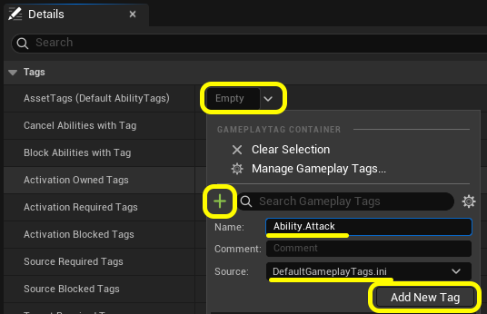
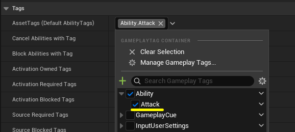
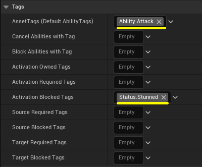

このステップのゴール
GAS を使う上で GameplayTag は至る所に登場します。 アビリティの制御、状態管理など、GAS の柔軟さを支える根幹の仕組みです。 Blueprint 編の締めくくりとして、タグを使った実践的な制御を実装します。
- GameplayTag の仕組みを理解する
- GameplayAbility の詳細パネルからタグを作成・設定する
- アビリティに AssetTags と Activation Blocked Tags を設定する
- 「スタン中はアビリティが発動できない」を Blueprint で実装・確認する
GameplayTag とは
GameplayTag は ドット区切りの階層ラベルです。 「このキャラクターは今こういう状態だ」「このアビリティはこの種類だ」という情報を シンプルな文字列で表現します。
タグの強みは 階層的なマッチングです。
Ability で検索すると Ability.Attack も Ability.Heal も
まとめてヒットします。これにより「攻撃系のアビリティをすべてキャンセルする」
といった処理をタグ1つで表現できます。
アビリティとタグの関係
GameplayAbility の「クラスのデフォルト」には、タグに関する重要な設定が並んでいます。
| 設定項目 | 役割 |
|---|---|
| AssetTags (Default AbilityTags) 一般に Ability Tags とも呼ばれる |
このアビリティ自身に付くタグ。実行中は ASC のタグリストに追加される。他のシステムがこのアビリティを識別するのにも使う。 |
| Cancel Abilities with Tag | このアビリティが発動したとき、指定タグを持つ他のアビリティを強制キャンセルする。 |
| Activation Required Tags | ASC にこのタグが揃っている場合のみ、発動できる。特定状態でしか使えないアビリティに使う。 |
| Activation Blocked Tags | ASC にこのタグが1つでもある間は、このアビリティを発動できない。スタンや詠唱中の制御に使う。 |
詳細パネルの Tags セクションには Block Abilities with Tag という
似た名前のプロパティもありますが、これは「このアビリティが発動中、指定タグを持つ
他のアビリティをブロックする」もので、
上の表の Activation Blocked Tags（このアビリティ自身の発動条件）とは別物です。
混同しないように注意してください。
今回は AssetTags と Activation Blocked Tags の2つを使い、
「スタン中はアビリティが発動できない」を実現します。
GA_MyFirstAbility にタグを設定する
GA_MyFirstAbility を開き、
「Class Defaults（クラスのデフォルト）」 を選択します。
詳細パネルの 「Tags」セクションを探してください。
AssetTags (Default AbilityTags) : Ability.Attack
Activation Blocked Tags : Status.Stunned
各項目の 「+」 を押すとタグブラウザが開き、
新規タグを作成しながら設定できます。
ダイアログの Source が
Not selected のままだと警告が出るので、
DefaultGameplayTags.ini を選択してください。
Comment は空欄のままでも追加できるので、今回は空欄にしておきます。

▲ UE 5.5 のスクリーンショット
タグを作成したら、タグブラウザのリストに Ability.Attack が追加されるので、
チェックを入れて選択してください。

▲ Ability.Attack が設定された状態（UE 5.5）
同様に Activation Blocked Tags の
「+」 から Status.Stunned タグを
新規作成して設定してください。

▲ 2つのタグを設定した状態（UE 5.5）ブループリントをコンパイルして保存してください。
AssetTags: Ability.Attack を設定すると、
このアビリティが実行中の間、キャラクターの ASC に Ability.Attack タグが付きます。
Activation Blocked Tags: Status.Stunned を設定すると、
ASC に Status.Stunned タグが存在する間は Q を押しても発動しなくなります。
スタン付与・解除を Blueprint で実装する
「スタン状態」を手動で ON/OFF して動作を確認するために、 キャラクターのブループリントにテスト用の入力を追加します。
キャラクターのブループリント（BP_ThirdPersonCharacter など）の
イベントグラフに以下の2つのイベントを追加します。
Target: Get Ability System Component
Tag: Status.Stunned → Print String
"Stunned!"
Target: Get Ability System Component
Tag: Status.Stunned → Print String
"Stun Removed"
GameplayEffect を使わずに ASC へ直接タグを付け外しする方法です。 今回のようなテスト用途や、単純な状態フラグに向いています。 実際のゲームでは、GameplayEffect でタグを自動付与するパターンがより一般的です（C++ 編で学べます）。
ブループリントをコンパイルして保存してください。
動作確認
プレイを開始して、以下の順で操作してください。
- Q キーを押す → 「Ability Activated!」が表示される（通常動作）
- E キーを押したまま → 「Stunned!」と表示される
- E を押したまま Q キーを押す → 何も表示されない（スタン中で発動ブロック）
- E キーを離す → 「Stun Removed」と表示される
- Q キーを押す → 再び「Ability Activated!」が表示される（スタン解除後は通常通り）
Blueprint でタグを確認する
アビリティの外から「このキャラクターは今スタン中か？」を調べたいときは、
Has Matching Gameplay Tag ノードを使います。
Tag: Status.Stunned
これを使えば「スタン中はアニメーションを変える」「スタン中は移動速度を下げる」 といった処理を Blueprint の Branch ノードで簡単に分岐できます。
うまくいかないときの確認ポイント
- タグのスペルが正しいか（大文字小文字を含め正確に）。Project Settings → GameplayTags で登録済みタグの一覧を確認できる
GA_MyFirstAbilityのAssetTagsにAbility.Attackが設定されているかActivation Blocked TagsにStatus.Stunnedが設定されているかAdd Loose Gameplay Tagの Tag がStatus.Stunned（大文字小文字を含め正確に）- E を押したまま Q を押しているのに発動してしまう → ブループリントを再コンパイルして試す
Blueprint 編のまとめ
GameplayTag を使うことで、「どんな状態のときに何ができるか」を
コードを書かずにタグの設定だけで制御できます。
スタン・沈黙・詠唱中・無敵など、複雑な状態管理がシンプルに表現できるのが GAS の強みです。
Blueprint 編の4ステップを通じて、C++ を使わずに GAS の3要素 （AbilitySystemComponent・GameplayAbility・GameplayTag） を実際に動かすことができました。